Patrimony of Gestures /
Patrimonio de gestos
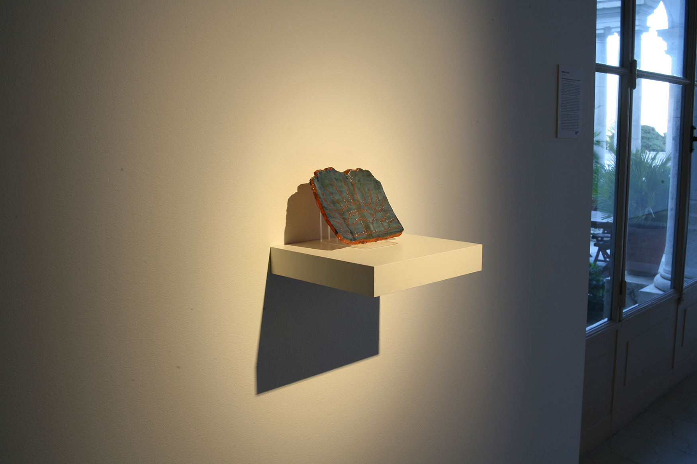
'Patrimony of gestures' is a term deriving from the field of archeobotany, which analyses plant evidence found at archaeological sites, preserved through waterlogging, carbonisation or imprinting in ceramics. From these inscriptions, archeobotanists reconstruct the gestures of past peoples as they worked with and lived on the land.
But what patrimony of gestures will current reproductive practices leave imprinted? And what occurs when the memory of reproductive practices is not protected, or actively erased?
But what patrimony of gestures will current reproductive practices leave imprinted? And what occurs when the memory of reproductive practices is not protected, or actively erased?

Patrimony of Gestures (2018-2022) was a series of exercises in writing, ceramics, performance-reading and listening that consider the memory of reproductive work beyond its definition as domestic labour, foregrounding myriad forms of communication and political practice, including poetry and art. The project was developed in the context of the Hangar.org Artistic Research Residency at Casa Velaquez in 2018, departing from a collaboration with an archeobotanist based at Casa Velazquez.
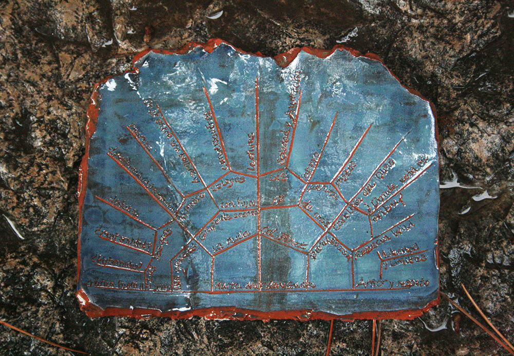
The research derived in the ceramic work Networks of Care=Critique.
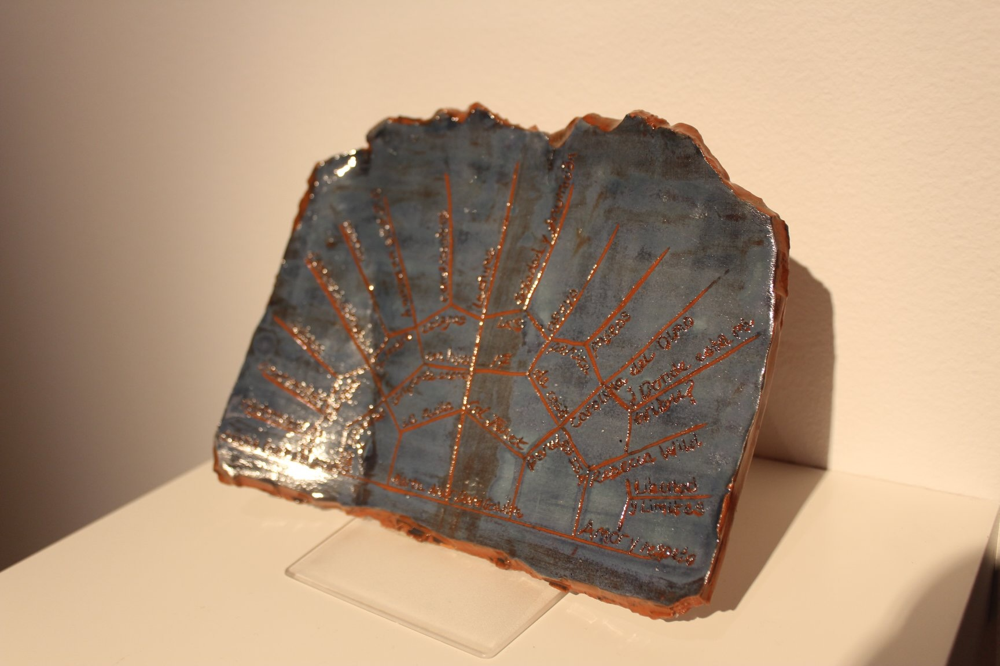
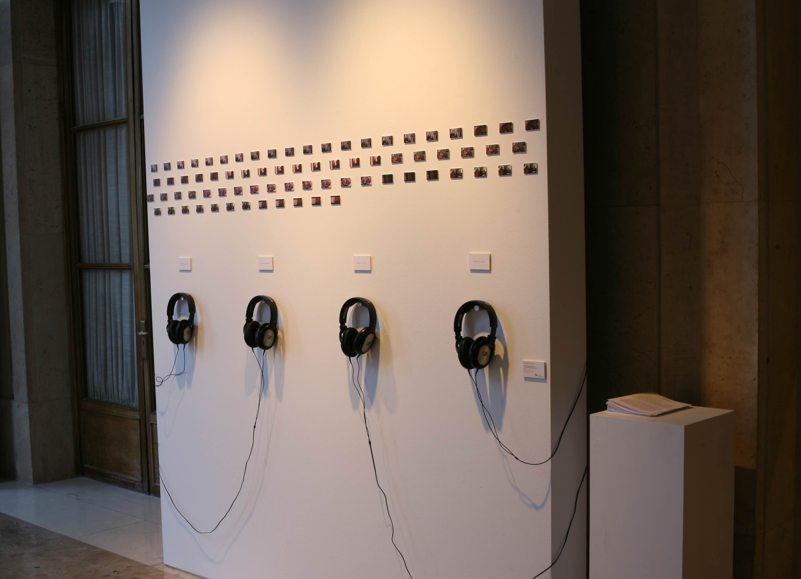
And The Logic of Assistance, an audio installation that considered the audience-listener as technology of assisted reproduction.
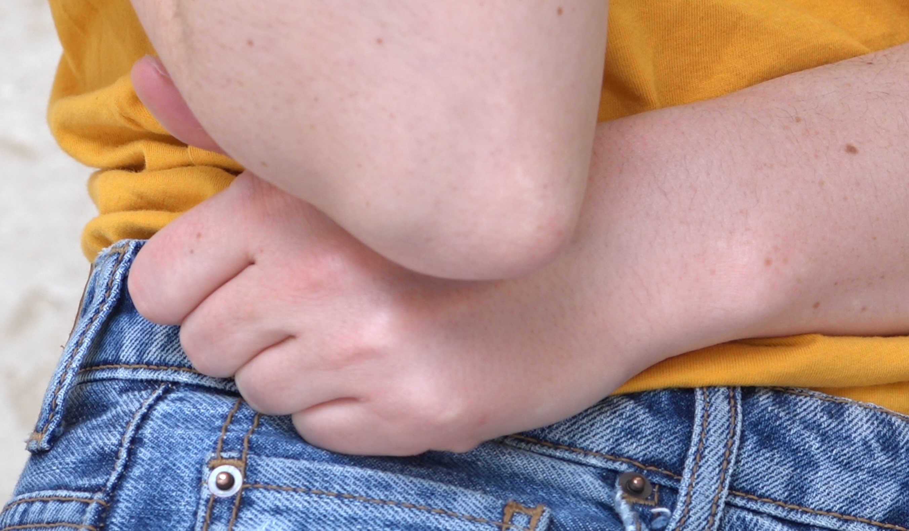
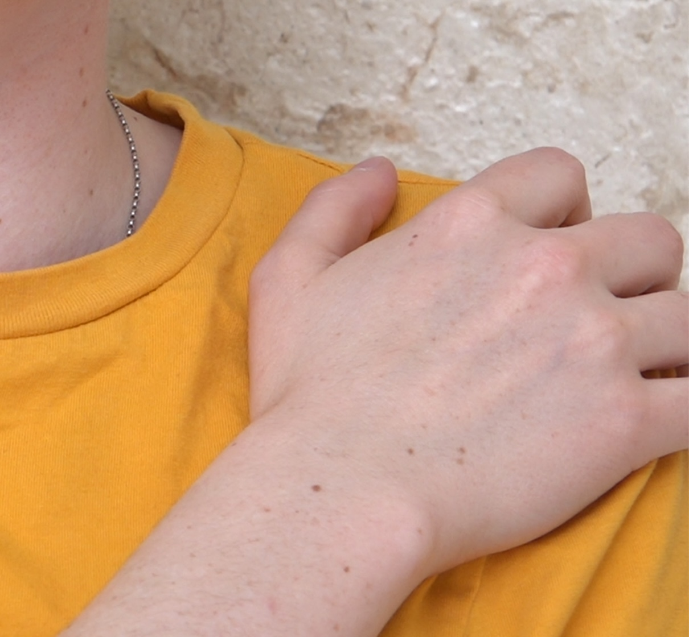
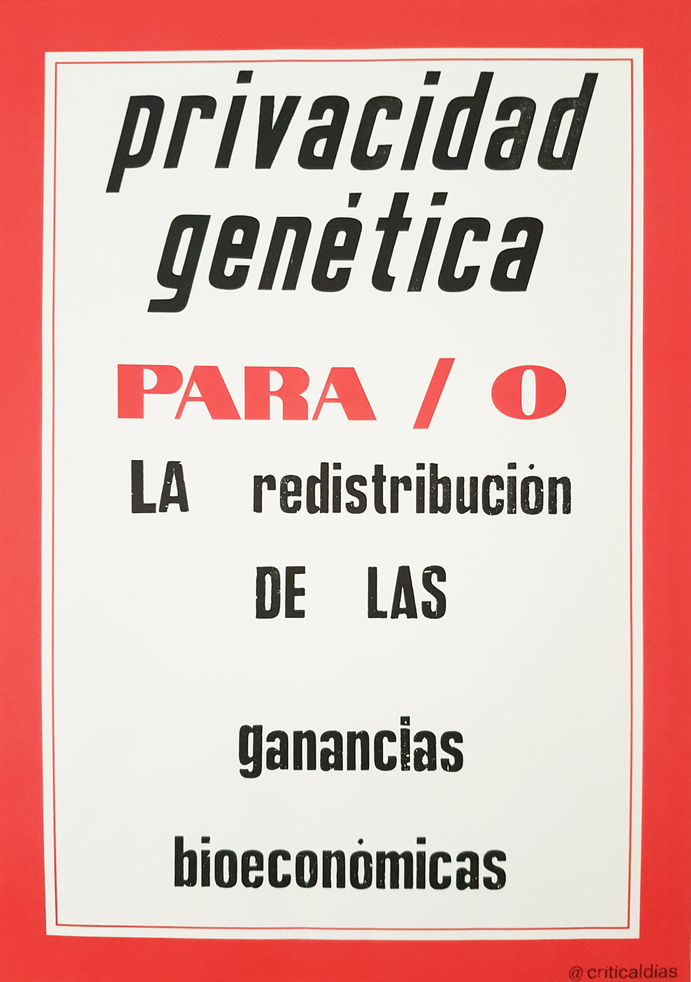
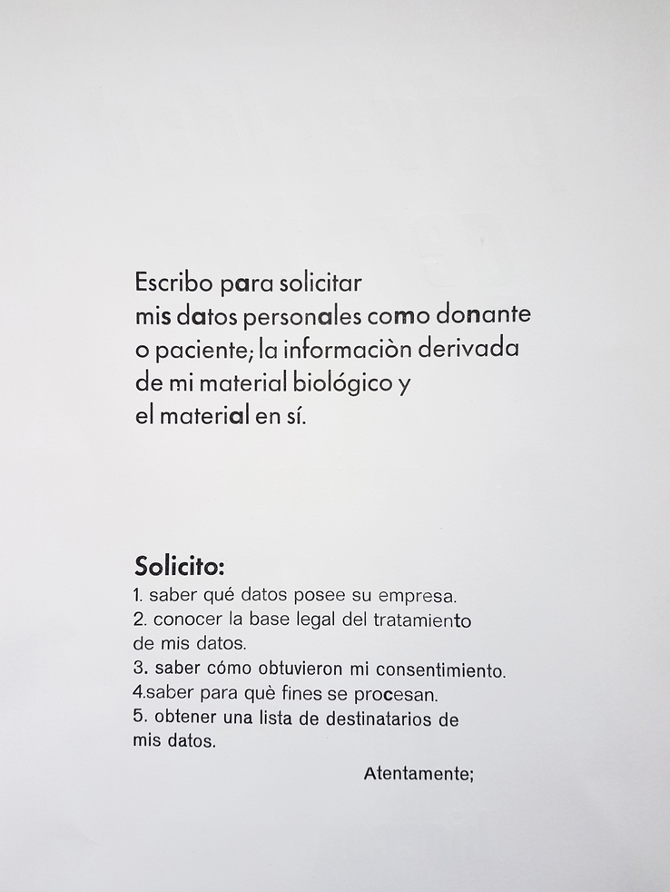
Genetic Privacy For/Or is a letter that donors and patients in Europe can use to file 'data'-access requests to ART and stem cell research industry clinics and biobanks. The letter was developed in correspondence with personaldata.io – a Switzerland-based non-profit that offers free legal advice on filing data access requests to social media related companies like Tinder, Twitter, Facebook, according to the guidelines introduced by the 2018 GDPR legislation.
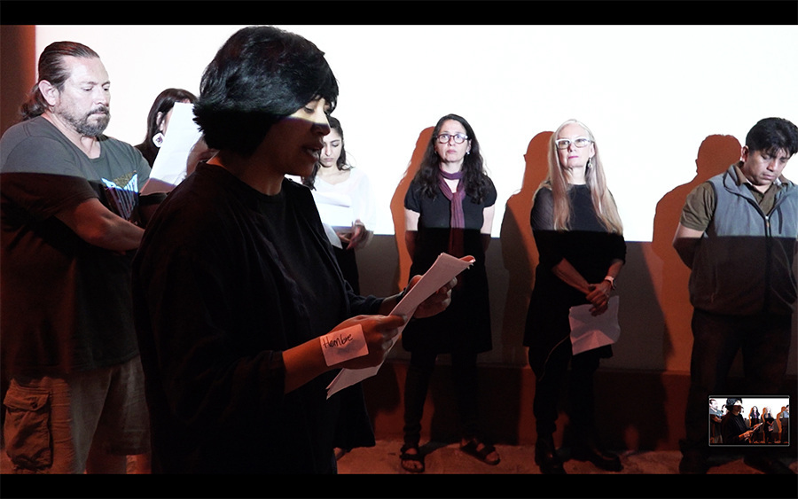
Further gestures were documented by a series of poster-publications, each one using a different printing technique (typography, digital, offset and screen printing), produced in collaboration with collectives L'Automatica and Madam_tornado in Barcelona. The posters were read in performance-readings at El Camito Galeria, Merida, Mexico, in January 2019 (with Bently Sprang, Mary Ellen Strom, Laine Rettmer, Ilse Morfim, Felipe Castillo, Analie Gomez, Dalida Maria Benfield, Syowia Kyambe and Jodi Rave Spotted Bear) and at Hangar Center for Art and Technology, Barcelona, in December, 2019 (with guests Tamara Al-Mashouk and Alba Juventy).
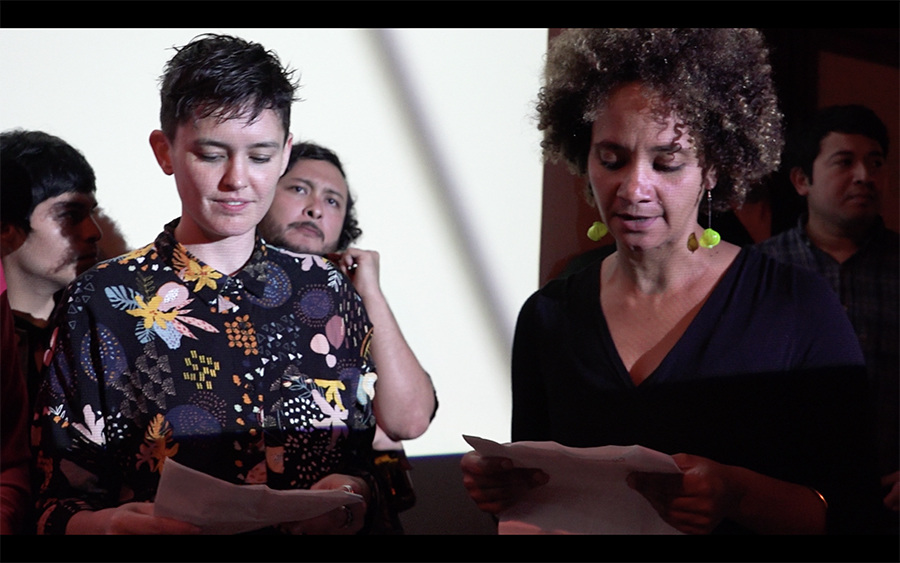
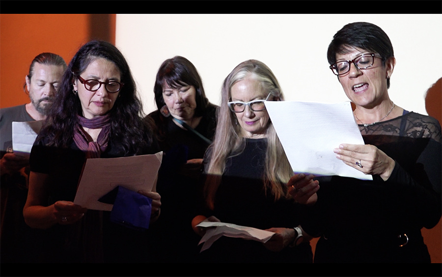
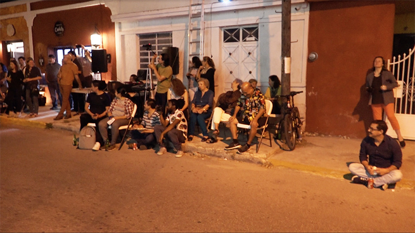
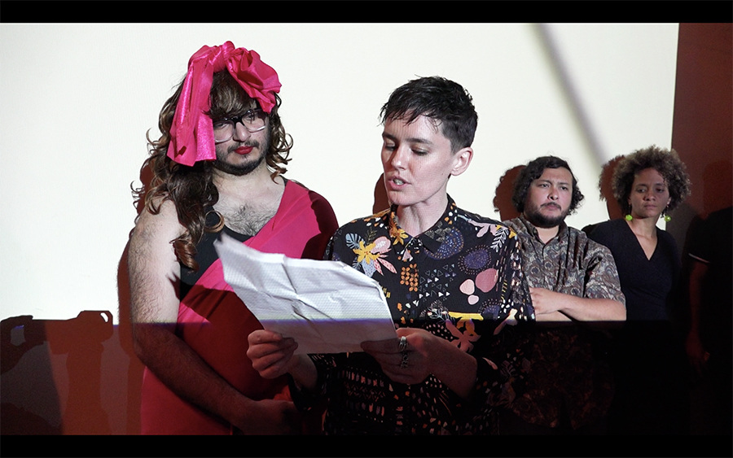
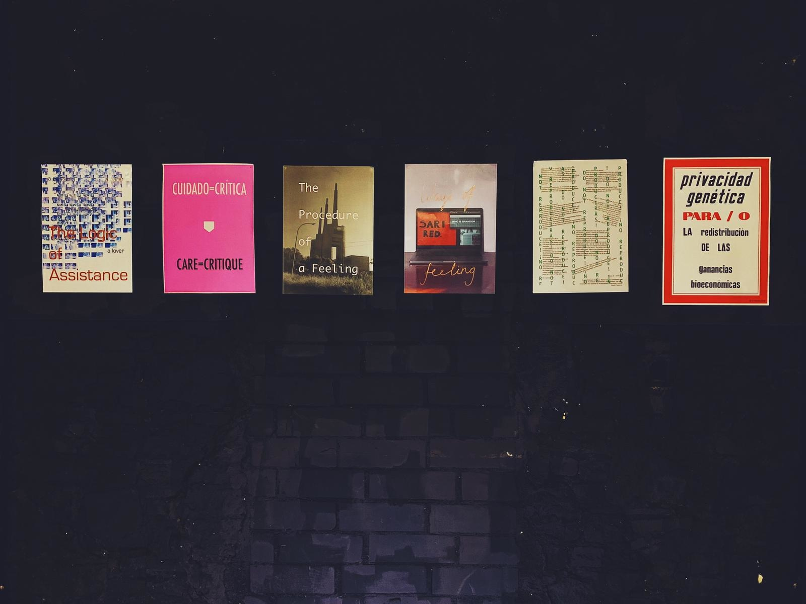
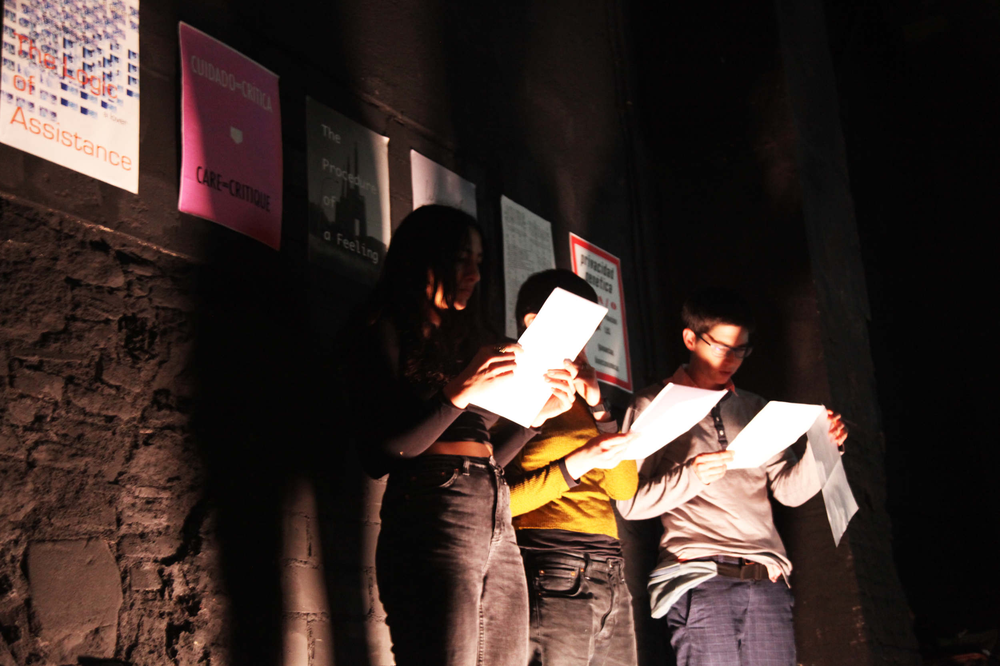